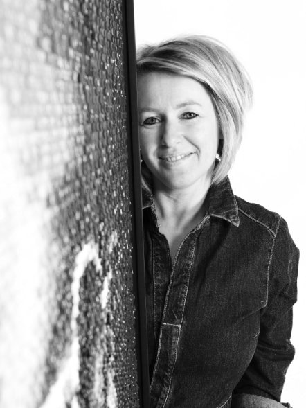

On Display
I welcome you to take a look at my works in real life. They are currently on display in these locations:
-
stArt to Art - Knokke
Edith and Marcel will warmly welcome you to their exquisite gallery "stArt to Art" located in Knokke. They have been running a gallery for many years in Grobbendonk, driven by their passion for art.
When they made the decision to open an additional beautiful gallery in the heart of Knokke in 2022, I was honored to be a part of this journey. Be sure to pay them a visit!
Click here for more info!
-
Kaderke - Heist o/d Berg
Guy and Sofie, a dedicated couple, run their business "Kaderke" that specializes in framing. Their daughter, Pauline, has recently joined the family enterprise, making it a truly close-knit operation. They've recently relocated to a new space, allowing them to carry out their work with even greater attention to detail and care.
I hold a special place in my heart for their business as they were the ones who framed my very first piece of art, and our ongoing collaboration remains dear to me. When you visit their establishment, you'll always have the opportunity to admire at least one artwork on display.
-
Odette Lunettes - Hasselt
One day, I had the unexpected pleasure of crossing paths with Eline De Munck in the vibrant city of Antwerp. I couldn't help but feel a bit starstruck, for I held tremendous respect for this remarkable and strong woman. Over the past few years, she had positioned herself as the ultimate role model for female entrepreneurs. Together with her business partner, Bob, they had taken the eyewear brand Odette Lunettes from the ground up to the incredible success it is today. And what a triumph it has been!
Eline's genuine appreciation for my work left me in awe, and she asked me to create two large artworks for their store in Hasselt. What an honor that was! I wholeheartedly accepted the opportunity. Don't miss the chance to visit the store in Hasselt and admire my artworks on display there.
-
My Art Studio - Bouwel
I initially created my first pieces of art in the comfort of my living room and kitchen. However, as my artistic journey gained momentum, these spaces proved to be inadequate for my expanding creativity. It was during this pivotal period that my father, with his background in the construction industry, offered me invaluable support and guidance. Together, we embarked on the ambitious project of transforming our garage into a magnificent studio where I not only create art but also welcome visitors to provide insights into my works.